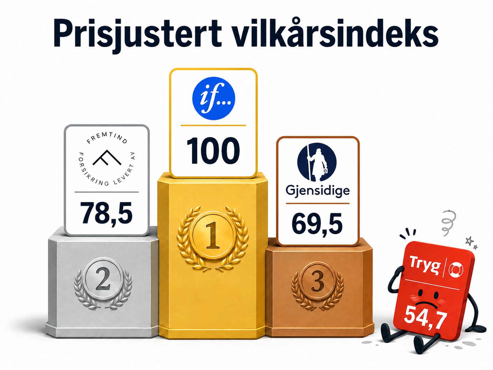

9. aug 2026
Vi har sammenlignet toppdekningene i innboforsikring hos If, Gjensidige, Fremtind og Tryg mot over 150 standardiserte skadehendelser, fra brann og vannskade til mobiluhell og tyveri. Modellen viser at forsikringene dekker de store, alvorlige skadene ganske likt. Forskjellene mellom selskapene ligger i stedet i særdekninger og beløpsgrenser for mer spesielle situasjoner. Prisen på forsikringene varierer derimot kraftig, langt mer enn den modellerte dekningen skulle tilsi. Satt sammen gir dette et prisjustert vilkårsindeks der If og Fremtind kommer best ut, og Tryg dårligst.
Når folk sammenligner innboforsikring, er det naturlig å spørre hvilken som er billigst.
Men det er ikke nødvendigvis det viktigste spørsmålet.
En billig forsikring er lite verdt dersom den dekker vesentlig dårligere når noe først skjer. Omvendt er det heller ikke sikkert at det er fornuftig å betale betydelig mer dersom den dyrere forsikringen i praksis gir omtrent samme økonomiske beskyttelse.
Vi har derfor forsøkt å svare på et annet spørsmål:
Hvor mye økonomisk beskyttelse får kunden for forsikringspremien?
For å undersøke dette har vi sammenlignet:
Forsikringene ble utsatt for de samme 152 tenkte og standardiserte skadehendelsene, blant annet brann, vannskader, tyveri, mobiluhell, sykkelskader, skadedyr, rettshjelp og tap av høyverdige eiendeler.
For hver hendelse ble forsikringsvilkårene brukt til å beregne hvor mye kunden ville fått erstattet etter egenandeler, beløpsgrenser og andre begrensninger.
Totalt innebærer dette 608 separate vilkårsvurderinger.
Når vi ser bort fra prisen og bare sammenligner den modellerte økonomiske beskyttelsen, ligger produktene forholdsvis tett.
| Forsikring | Modellert årlig utbetaling | Andel av modellert skade som dekkes | Vilkårsindeks, beste = 100 |
|---|---|---|---|
| If Super | 2 930 kr | 86,8 % | 100,0 |
| Tryg Innbo Ekstra | 2 908 kr | 86,1 % | 99,3 |
| Gjensidige Innbo Pluss | 2 820 kr | 83,5 % | 96,2 |
| Fremtind Topp Innbo | 2 817 kr | 83,4 % | 96,1 |
Beregningene viser altså et spenn på bare rundt 3,4 prosentpoeng mellom høyeste og laveste modellerte dekningsgrad. If og Tryg ligger særlig tett.
Det betyr ikke at vilkårene er like.
Tvert imot finner vi betydelige forskjeller når vi går ned på detaljnivå.
Men forskjellene finnes i stor grad i særdekninger, beløpsgrenser og spesielle situasjoner. Når disse forskjellene vektes etter hvor sannsynlig skadehendelsen er og hvor stort økonomisk tap den medfører, blir utslaget på den samlede dekningen langt mindre.
Det er særlig ved de økonomisk alvorlige og tradisjonelle forsikringsskadene at produktene ligner på hverandre.
Ved totalbrann i vår modell er bruttotapet satt til 1,425 millioner kroner. Gjensidige gir i beregningen 1,422 millioner etter egenandel, mens de tre øvrige gir 1,421 millioner.
Også ved en større rombrann på 450 000 kroner blir forskjellen i dette eksemplet bare 1 000 kroner mellom Gjensidige og de øvrige selskapene.
Tilsvarende ser vi ved ordinære vannskader. Ved en modellert rørlekkasje på 45 000 kroner gir Gjensidiges vilkår 42 000 kroner, mens If, Fremtind og Tryg gir 41 000 kroner i beregningen.
For kunden som rammes av brann, vannskade, naturskade eller ordinært innbrudd, er derfor forskjellene mellom topproduktene ofte mindre enn produktoversiktene kan gi inntrykk av.
Forskjellene blir tydeligere når vi beveger oss ut i tilleggsdekningene.
Et eksempel er mobiltelefon.
Hvis en mobilskjerm knuses i vår modell, dekker alle fire forsikringene skaden, men egenandelen varierer. Gjensidige har 1 000 kroner i dette scenarioet, mens If, Fremtind og Tryg har 2 000 kroner.
Hvis mobilen derimot totalskades ved et uhell, blir forskjellen større. Gjensidige, If og Tryg ble vurdert til å dekke hendelsen. Fremtinds mobilbestemmelse ble i vårt kildegrunnlag vurdert som en reparasjonsdekning, mens mobiltelefon samtidig er unntatt fra den generelle uhellsdekningen.
Også på andre områder finnes tydelige forskjeller.
| Eksempel | Gjensidige | If | Fremtind | Tryg |
|---|---|---|---|---|
| Mobil totalskadet ved uhell | Dekket | Dekket | Ikke dekket i vår tolkning | Dekket |
| Direkte innboskade fra mus/rotter | Dekket | Ikke klart dokumentert | Dekket | Ikke klart dokumentert |
| Hærverk fra leietaker i testavtalen | Ikke valgt utleiedekning | Dekket med vilkår | Ikke dekket | Ikke i ordinær testdekning |
| ID-tyveribistand før tvist | Dekket | Dekket | Dekket | Ikke tilsvarende bistand funnet |
| Boligtilpasning ved varig rullestolbehov | Inntil 250 000 kr | Inntil 250 000 kr | Inntil 300 000 kr | Ikke funnet |
| Høyverdig enkeltgjenstand, test på 450 000 kr | Grense 500 000 | Grense 500 000 | Grense 300 000 | Dekket innen produktets samlede grense |
For eksempel fant vi at Gjensidige, If og Fremtind hadde særskilt dekning i vårt scenario for boligtilpasning ved varig rullestolbehov, mens tilsvarende dekning ikke ble funnet i Tryg Innbo Ekstra.
Ved en høyverdig enkeltgjenstand på 450 000 kroner fikk Fremtinds grense på 300 000 kroner stor betydning, mens Gjensidige og If hadde en modellert grense på 500 000 kroner.
Dette viser hvorfor det fortsatt kan være viktig å lese vilkårene dersom man har spesielle behov.
Når vi legger inn prisen på forsikringene, endrer bildet seg betydelig.
I pristilbudene som inngår i testen var årsprisen:
| Forsikring | Årspremie | Prisindeks |
|---|---|---|
| If Super | 2 508 kr | 100 |
| Fremtind Topp Innbo | 3 072 kr | 122 |
| Gjensidige Innbo Pluss | 3 475 kr | 139 |
| Tryg Innbo Ekstra | 4 548 kr | 181 |
Tryg kostet dermed rundt 81 prosent mer enn If for den samme testkunden, mens den modellerte samlede dekningen var nesten identisk: 86,1 prosent hos Tryg mot 86,8 prosent hos If.
Når vi sammenholder pris og modellert vilkårsbeskyttelse, blir forskjellen derfor langt større:
| Forsikring | Prisjustert vilkårsindeks |
|---|---|
| If Super | 100 |
| Fremtind Topp Innbo | 78,5 |
| Gjensidige Innbo Pluss | 69,5 |
| Tryg Innbo Ekstra | 54,7 |

Indeksen betyr ikke at If er «45 prosent bedre» enn Tryg.
Den viser hvor mye modellert vilkårsbeskyttelse forsikringen gir relativt til premien, med If satt til 100 som sammenligningspunkt.
Analysen er en modell – ikke historiske skadeoppgjør.
De 152 hendelsene er tenkte, standardiserte skadehendelser som er laget for å utfordre de ulike delene av forsikringsvilkårene.
Sannsynlighetene er kalibrert mot skadefrekvenser fra Finans Norge for perioden 2021–2025. For brann og vann er BRASK- og VASK-statistikken brukt til å fordele skader på ulike årsaksgrupper.
Som basis er det brukt en husholdning med 1,5 millioner kroner i samlet innbo. Store skadehendelser er modellert som andeler av samlet innboverdi, mens konkrete gjenstander som mobil, PC og sykkel er satt til standardiserte gjenanskaffelsesverdier.
For hvert selskap beregnes deretter:
sannsynligheten for skaden × erstatningen som følger av vilkårene
etter at blant annet egenandel, beløpsgrenser og aldersfradrag er trukket fra.
De forventede utbetalingene summeres så over alle hendelsene.
Modellen gir en samlet årlig økonomisk skadebelastning på rundt 3 376 kroner før forsikringsvilkårene anvendes.
Resultatene betyr ikke at If nødvendigvis er det beste valget for alle.
En kunde med svært dyr sykkel, kunst, smykker, utleiebolig eller andre særskilte behov kan legge langt større vekt på enkelte vilkår enn den gjennomsnittlige risikoen i modellen tilsier.
Testen sier heller ikke hva selskapene faktisk vil betale i en konkret skade. Et skadeoppgjør avhenger av faktum, dokumentasjon og de fullstendige vilkårene.
Formålet er i stedet å undersøke hvor stor økonomisk betydning forskjellene mellom vilkårene får når de samme risikoene brukes for alle selskapene.
Hovedfunnet er derfor ikke at de fire forsikringene er identiske.
De er det ikke.
Men analysen viser at de største og økonomisk viktigste skadene i stor grad dekkes av alle fire topproduktene. De største forskjellene finnes ofte i særdekninger og spesielle situasjoner.
Når alle forskjellene vektes etter sannsynlighet og økonomisk konsekvens, ender forsikringene derfor forholdsvis nær hverandre i samlet modellert dekning.